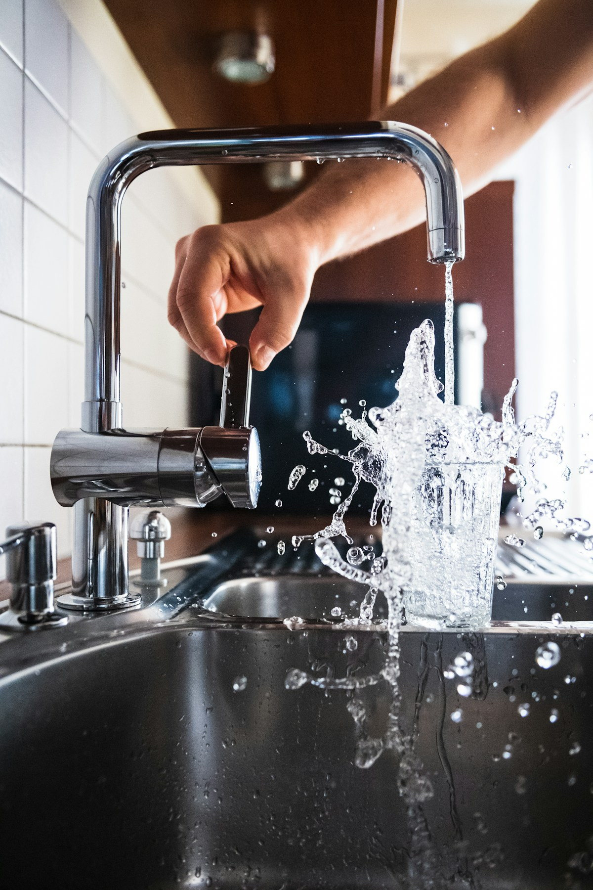
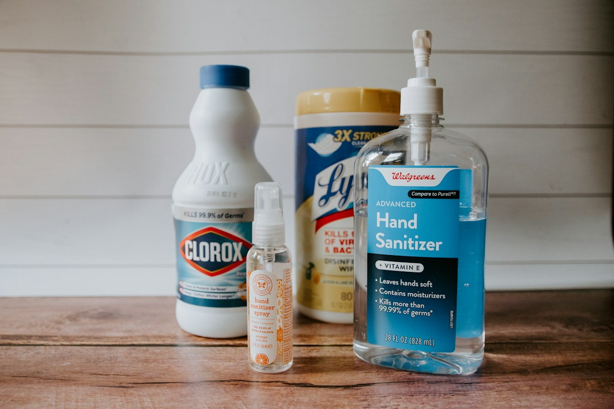

Maintenance / FIELD NOTESHow often should a septic tank be pumped?
A septic tank does not empty itself. Solids accumulate even when the outlet is clear. A household of four with a modest tank often needs a professional check every few years, but the precise interval depends on actual sludge depth, usage and local conditions.
Write down your tank size and the last pumping date. Ask the crew to measure accumulated sludge and record their findings rather than relying only on calendar guesses. A growing household or heavy water use can shorten the interval.
Never open or enter the tank yourself. Ask a mechanized operator for inspection and safe desludging. Keep a written service log so the next visit is based on facts.
Ask our team 
Warning Signs / FIELD NOTESSeven warning signs before a sewage backup
A single slow sink may be a local clog, but several fixtures draining slowly at once need attention. Gurgling toilets, sewage smells, pooling wastewater and damp drain-field patches are stronger reasons to investigate.
If sewage is coming back into the house, stop unnecessary water use and keep children and pets away from contaminated spaces. Avoid pouring chemical drain cleaners into the system.
A technician can distinguish a full tank, blocked pipe, failed baffle or drain-field issue. Calling early often protects flooring and surrounding soil.
Ask our team Monsoon / FIELD NOTESMonsoon protection for your septic system
Heavy rain can saturate the soil around a drain field. When the ground cannot absorb treated effluent effectively, water may back up into pipes or collect near the tank.
Before monsoon season, check that roof drains and yard runoff are directed away from the tank and drain field. Keep inspection covers accessible and note any recurring soft or unusually green patches.
Do not drive a vehicle over an unknown buried tank or drain field, especially in wet soil. If sewage is surfacing, treat it as a health concern and seek qualified assistance.
Ask our team 
Household Care / FIELD NOTESWhat should never go down a septic toilet
A septic system works best when toilets carry ordinary human waste and toilet paper, not household rubbish. Wet wipes advertised as flushable may remain intact and build up in pipes or the tank.
Avoid sanitary products, cotton pads, diapers, large volumes of grease, paint, solvents and medicines. Kitchen fats cool and form stubborn deposits that can interfere with flow.
Place a small bin near the toilet, scrape grease into a separate container and teach guests the basics. These simple habits cost far less than an emergency call.
Ask our team Inspection / FIELD NOTESBuying a home with a septic tank: inspection checklist
A neat lawn can hide years of skipped tank maintenance. Before buying a property, request the septic layout, tank capacity, prior service records and any known reports of backups or repairs.
Ask for a qualified inspection covering accessible tank condition, risers, inlet/outlet components and signs of drain-field stress. A camera inspection can help investigate selected pipe concerns.
Confirm that any recommended repairs and disposal practices meet local requirements. A documented condition assessment is more valuable than a seller saying it has always worked.
Ask our team Pumping / FIELD NOTESHow a vacuum truck pumping visit really works
The crew first confirms safe vehicle access and locates the tank opening. They inspect visible conditions, measure sludge where practical and use a mechanized vacuum truck to remove tank contents.
After extraction, the technician checks accessible components for obvious problems and closes the tank safely. Waste should be transported through authorized disposal arrangements, not dumped into open land or drains.
Prepare by clearing the route to the cover, securing pets and sharing information about buried pipes or unusually narrow gates. Ask for a service record and recommended next inspection date.
Ask our team